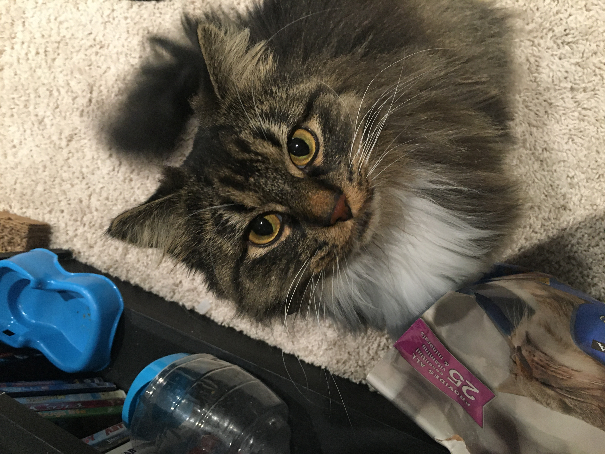

Full-Stack Web Developer/Software Engineer A little about me:
I am 28 years old from Lethbridge Alberta. I graduated highschool in Fort macleod in 2012. I went to south carolina on a volleyball scholarship and shortly dropped out.
I double majored in English and communications, which was a really , really bad idea. After coming home I tried to become self employed editing and writing for freelance websites. It worked for a while, but COVID-19 killed that fast.
I came back to lethbridge to try school again, and learned I loved software development. Ever since I have been progressing my skills and expanding my knowledge to reach my goals. Currently I am looking for open source projects to lend a hand with
and to enter challenges and competitions such as what can be found on hackerrank. This is my cat, Bitty. She says thanks for reading!
